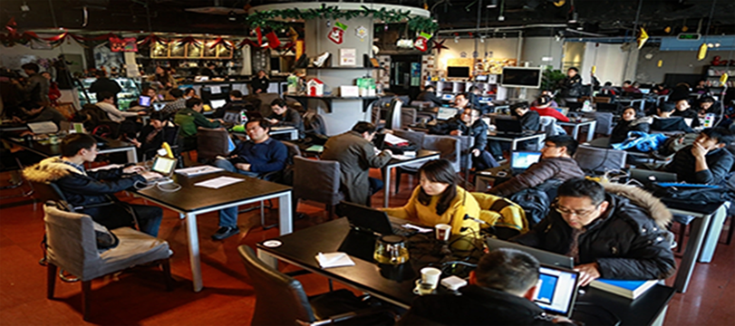

中关村咖啡馆的一天
5月中旬的一天，上午10时。在北京中关村创业大街的车库咖啡馆，28岁的郁文要了一杯咖啡，背靠沙发，开始了工作。郁文来自山东青岛，刚下火车便马不停蹄地赶了过来。“我正在做‘互联网+’海鲜卤味产品。”他说，“现在已经有投资人主动跟我聊了。”
创业者为什么大老远跑到这里？北京车库咖啡孵化器管理有限公司合伙人吴建波告诉笔者，车库咖啡的吸引力在于它解决了创业过程中的一系列“痛点”。“你带着一个想法来，哪怕是一个天马行空的想法，我们也可以帮你找合作伙伴，帮你融资，提供品牌、培训、互联网技术等服务。” 日前，笔者接到来自车库咖啡馆的消息，他们的海口分店正式开业了。并且，韩国、美国、加拿大等国家也都有强烈的合作意愿。显然，中关村咖啡馆不只属于北京，也是全国，甚至全球的。
中午时分，笔者走进隔壁的3W咖啡馆。这里同样是一片熙攘，年轻人三三两两围坐在一起，很投入地交谈着。“妙计旅行”团队成员张帆告诉笔者，起初他们想创业，但是租不起写字楼，“而这里的收费只有写字楼的1/10”。
除了租金低外，在这些创业咖啡馆里，创业团队只需要拥有一个工位，就可以注册一家公司。“3W的创业工位非常受欢迎，现在处于供不应求状态。目前的场地预约已经排到了3个月之后。”3W创业服务体系总裁袁子文介绍说。
排队预约工位，烈日下演讲……咖啡馆内外，四处涌动的都是创业热情。从2014年6月开街以来，中关村创业大街入驻创业服务机构、投资机构40家，孵化创业团队1700多家。
在黑马咖啡馆，创业黑马董事长牛文文对中国的“大众创业、万众创新”提出了独到的见解。“中关村的创业，与美国硅谷不同。”牛文文说，中国每年至少有三四百万人创业，规模是硅谷的百倍、千倍，大众创业并非精英创业。因此，提高创业成功率是关键，这才是当下正确的创业价值观。 夜幕降临后，更多的创业者聚集到咖啡馆里。
据记载，牛顿的《自然哲学的数学原理》源于咖啡馆里的争论，亚当·斯密的《国富论》是咖啡馆里写成的。那么，在中国的咖啡馆里，未来将诞生怎样的奇迹？